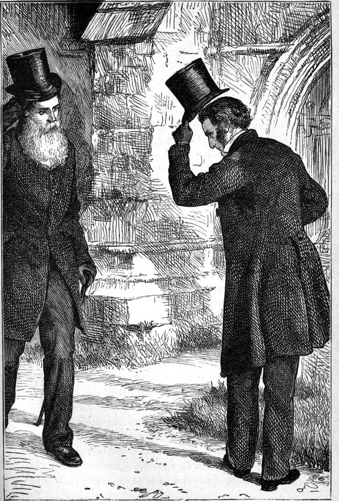

On the afternoon of my second Sunday at Marshmallows, I was standing in the churchyard, casting a long shadow in the light of the declining sun. I was reading the inscription upon an old headstone, for I thought everybody was gone; when I heard a door open, and shut again before I could turn. I saw at once that it must have been a little door in the tower, almost concealed from where I stood by a deep buttress. I had never seen the door open, and I had never inquired anything about it, supposing it led merely into the tower.
After a moment it opened again, and, to my surprise, out came, stooping his tall form to get his gray head clear of the low archway, a man whom no one could pass without looking after him. Tall, and strongly built, he had the carriage of a military man, without an atom of that sternness which one generally finds in the faces of those accustomed to command. He had a large face, with large regular features, and large clear gray eyes, all of which united to express an exceeding placidity or repose. It shone with intelligence—a mild intelligence—no way suggestive of profundity, although of geniality. Indeed, there was a little too much expression. The face seemed to express ALL that lay beneath it.
I was not satisfied with the countenance; and yet it looked quite good. It was somehow a too well-ordered face. It was quite Greek in its outline; and marvellously well kept and smooth, considering that the beard, to which razors were utterly strange, and which descended half-way down his breast, would have been as white as snow except for a slight yellowish tinge. His eyebrows were still very dark, only just touched with the frost of winter. His hair, too, as I saw when he lifted his hat, was still wonderfully dark for the condition of his beard.—It flashed into my mind, that this must be the organist who played so remarkably. Somehow I had not happened yet to inquire about him. But there was a stateliness in this man amounting almost to consciousness of dignity; and I was a little bewildered. His clothes were all of black, very neat and clean, but old-fashioned and threadbare. They bore signs of use, but more signs of time and careful keeping. I would have spoken to him, but something in the manner in which he bowed to me as he passed, prevented me, and I let him go unaccosted.

The sexton coming out directly after, and proceeding to lock the door, I was struck by the action. “What IS he locking the door for?” I said to myself. But I said nothing to him, because I had not answered the question myself yet.
“Who is that gentleman,” I asked, “who came out just now?”
“That is Mr Stoddart, sir,” he answered.
I thought I had heard the name in the neighbourhood before.
“Is it he who plays the organ?” I asked.
“That he do, sir. He’s played our organ for the last ten year, ever since he come to live at the Hall.”
“What Hall?”
“Why the Hall, to be sure,—Oldcastle Hall, you know.”
And then it dawned on my recollection that I had heard Judy mention her uncle Stoddart. But how could he be her uncle?
“Is he a relation of the family?” I asked.
“He’s a brother-in-law, I believe, of the old lady, sir, but how ever he come to live there I don’t know. It’s no such binding connexion, you know, sir. He’s been in the milintairy line, I believe, sir, in the Ingies, or somewheres.”
I do not think I shall have any more strange parishioners to present to my readers; at least I do not remember any more just at this moment. And this one, as the reader will see, I positively could not keep out.
A military man from India! a brother-in-law of Mrs Oldcastle, choosing to live with her! an entrancing performer upon an old, asthmatic, dry-throated church organ! taking no trouble to make the clergyman’s acquaintance, and passing him in the churchyard with a courteous bow, although his face was full of kindliness, if not of kindness! I could not help thinking all this strange. And yet—will the reader cease to accord me credit when I assert it?—although I had quite intended to inquire after him when I left the vicarage to go to the Hall, and had even thought of him when sitting with Mrs Oldcastle, I never thought of him again after going with Judy, and left the house without having made a single inquiry after him. Nor did I think of him again till just as I was passing under the outstretched neck of one of those serpivolants on the gate; and what made me think of him then, I cannot in the least imagine; but I resolved at once that I would call upon him the following week, lest he should think that the fact of his having omitted to call upon me had been the occasion of such an apparently pointed omission on my part. For I had long ago determined to be no further guided by the rules of society than as they might aid in bringing about true neighbourliness, and if possible friendliness and friendship. Wherever they might interfere with these, I would disregard them—as far on the other hand as the disregard of them might tend to bring about the results I desired.
When, carrying out this resolution, I rang the doorbell at the Hall, and inquired whether Mr Stoddart was at home, the butler stared; and, as I simply continued gazing in return, and waiting, he answered at length, with some hesitation, as if he were picking and choosing his words:
“Mr Stoddart never calls upon any one, sir.”
“I am not complaining of Mr Stoddart,” I answered, wishing to put the man at his ease.
“But nobody calls upon Mr Stoddart,” he returned.
“That’s very unkind of somebody, surely,” I said.
“But he doesn’t want anybody to call upon him, sir.”
“Ah! that’s another matter. I didn’t know that. Of course, nobody has a right to intrude upon anybody. However, as I happen to have come without knowing his dislike to being visited, perhaps you will take him my card, and say that if it is not disagreeable to him, I should like exceedingly to thank him in person for his sermon on the organ last Sunday.”
He had played an exquisite voluntary in the morning.
“Give my message exactly, if you please,” I said, as I followed the man into the hall.
“I will try, sir,” he answered. “But won’t you come up-stairs to mistress’s room, sir, while I take this to Mr Stoddart?”
“No, I thank you,” I answered. “I came to call upon Mr Stoddart only, and I will wait the result of you mission here in the hall.”
The man withdrew, and I sat down on a bench, and amused myself with looking at the portraits about me. I learned afterwards that they had hung, till some thirty years before, in a long gallery connecting the main part of the house with that portion to which the turret referred to so often in Old Weir’s story was attached. One particularly pleased me. It was the portrait of a young woman—very lovely—but with an expression both sad and—scared, I think, would be the readiest word to communicate what I mean. It was indubitably, indeed remarkably, like Miss Oldcastle. And I learned afterwards that it was the portrait of Mrs Oldcastle’s grandmother, that very Mrs Crowfoot mentioned in Weir’s story. It had been taken about six months after her marriage, and about as many before her death.
The butler returned, with the request that I would follow him. He led me up the grand staircase, through a passage at right angles to that which led to the old lady’s room, up a narrow circular staircase at the end of the passage, across a landing, then up a straight steep narrow stair, upon which two people could not pass without turning sideways and then squeezing. At the top of this I found myself in a small cylindrical lobby, papered in blocks of stone. There was no door to be seen. It was lighted by a conical skylight. My conductor gave a push against the wall. Certain blocks yielded, and others came forward. In fact a door revolved on central pivots, and we were admitted to a chamber crowded with books from floor to ceiling, arranged with wonderful neatness and solidity. From the centre of the ceiling, whence hung a globular lamp, radiated what I took to be a number of strong beams supporting a floor above; for our ancestors put the ceiling above the beams, instead of below them, as we do, and gained in space if they lost in quietness. But I soon found out my mistake. Those radiating beams were in reality book-shelves. For on each side of those I passed under I could see the gilded backs of books standing closely ranged together. I had never seen the connivance before, nor, I presume, was it to be seen anywhere else.
“How does Mr Stoddart reach those books?” I asked my conductor.
“I don’t exactly know, sir,” whispered the butler. “His own man could tell you, I dare say. But he has a holiday to-day; and I do not think he would explain it either; for he says his master allows no interference with his contrivances. I believe, however, he does not use a ladder.”
There was no one in the room, and I saw no entrance but that by which we had entered. The next moment, however, a nest of shelves revolved in front of me, and there Mr Stoddart stood with outstretched hand.
“You have found me at last, Mr Walton, and I am glad to see you,” he said.
He led me into an inner room, much larger than the one I had passed through.
“I am glad,” I replied, “that I did not know, till the butler told me, your unwillingness to be intruded upon; for I fear, had I known it, I should have been yet longer a stranger to you.”
“You are no stranger to me. I have heard you read prayers, and I have heard you preach.”
“And I have heard you play; so you are no stranger to me either.”
“Well, before we say another word,” said Mr Stoddart, “I must just say one word about this report of my unsociable disposition.—I encourage it; but am very glad to see you, notwithstanding.—Do sit down.”
I obeyed, and waited for the rest of his word.
“I was so bored with visits after I came, visits which were to me utterly uninteresting, that I was only too glad when the unusual nature of some of my pursuits gave rise to the rumour that I was mad. The more people say I am mad, the better pleased I am, so long as they are satisfied with my own mode of shutting myself up, and do not attempt to carry out any fancies of their own in regard to my personal freedom.”
Upon this followed some desultory conversation, during which I took some observations of the room. Like the outer room, it was full of books from floor to ceiling. But the ceiling was divided into compartments, harmoniously coloured.
“What a number of books you have!” I observed.
“Not a great many,” he answered. “But I think there is hardly one of them with which I have not some kind of personal acquaintance. I think I could almost find you any one you wanted in the dark, or in the twilight at least, which would allow me to distinguish whether the top edge was gilt, red, marbled, or uncut. I have bound a couple of hundred or so of them myself. I don’t think you could tell the work from a tradesman’s. I’ll give you a guinea for the poor-box if you pick out three of my binding consecutively.”
I accepted the challenge; for although I could not bind a book, I considered myself to have a keen eye for the outside finish. After looking over the backs of a great many, I took one down, examined a little further, and presented it.
“You are right. Now try again.”
Again I was successful, although I doubted.
“And now for the last,” he said.
Once more I was right.
“There is your guinea,” said he, a little mortified.
“No,” I answered. “I do not feel at liberty to take it, because, to tell the truth, the last was a mere guess, nothing more.”
Mr Stoddart looked relieved.
“You are more honest than most of your profession,” he said. “But I am far more pleased to offer you the guinea upon the smallest doubt of your having won it.”
“I have no claim upon it.”
“What! Couldn’t you swallow a small scruple like that for the sake of the poor even? Well, I don’t believe YOU could.—Oblige me by taking this guinea for some one or other of your poor people. But I AM glad you weren’t sure of that last book. I am indeed.”
I took the guinea, and put it in my purse.
“But,” he resumed, “you won’t do, Mr Walton. You’re not fit for your profession. You won’t tell a lie for God’s sake. You won’t dodge about a little to keep all right between Jove and his weary parishioners. You won’t cheat a little for the sake of the poor! You wouldn’t even bamboozle a little at a bazaar!”
“I should not like to boast of my principles,” I answered; “for the moment one does so, they become as the apples of Sodom. But assuredly I would not favour a fiction to keep a world out of hell. The hell that a lie would keep any man out of is doubtless the very best place for him to go to. It is truth, yes, The Truth that saves the world.”
“You are right, I daresay. You are more sure about it than I am though.”
“Let us agree where we can,” I said, “first of all; and that will make us able to disagree, where we must, without quarrelling.”
“Good,” he said—“Would you like to see my work shop?”
“Very much, indeed,” I answered, heartily.
“Do you take any pleasure in applied mechanics?”
“I used to do so as a boy. But of course I have little time now for anything of the sort.”
“Ah! of course.”
He pushed a compartment of books. It yielded, and we entered a small closet. In another moment I found myself leaving the floor, and in yet a moment we were on the floor of an upper room.
“What a nice way of getting up-stairs!” I said.
“There is no other way of getting to this room,” answered Mr Stoddart. “I built it myself; and there was no room for stairs. This is my shop. In my library I only read my favourite books. Here I read anything I want to read; write anything I want to write; bind my books; invent machines; and amuse myself generally. Take a chair.”
I obeyed, and began to look about me.
The room had many books in detached book-cases. There were various benches against the walls between,—one a bookbinder’s; another a carpenter’s; a third had a turning-lathe; a fourth had an iron vice fixed on it, and was evidently used for working in metal. Besides these, for it was a large room, there were several tables with chemical apparatus upon them, Florence-flasks, retorts, sand-baths, and such like; while in a corner stood a furnace.
“What an accumulation of ways and means you have about you!” I said; “and all, apparently, to different ends.”
“All to the same end, if my object were understood.”
“I presume I must ask no questions as to that object?”
“It would take time to explain. I have theories of education. I think a man has to educate himself into harmony. Therefore he must open every possible window by which the influences of the All may come in upon him. I do not think any man complete without a perfect development of his mechanical faculties, for instance, and I encourage them to develop themselves into such windows.”
“I do not object to your theory, provided you do not put it forward as a perfect scheme of human life. If you did, I should have some questions to ask you about it, lest I should misunderstand you.”
He smiled what I took for a self-satisfied smile. There was nothing offensive in it, but it left me without anything to reply to. No embarrassment followed, however, for a rustling motion in the room the same instant attracted my attention, and I saw, to my surprise, and I must confess, a little to my confusion, Miss Oldcastle. She was seated in a corner, reading from a quarto lying upon her knees.
“Oh! you didn’t know my niece was here? To tell the truth, I forgot her when I brought you up, else I would have introduced you.”
“That is not necessary, uncle,” said Miss Oldcastle, closing her book.
I was by her instantly. She slipped the quarto from her knee, and took my offered hand.
“Are you fond of old books?” I said, not having anything better to say.
“Some old books,” she answered.
“May I ask what book you were reading?”
“I will answer you—under protest,” she said, with a smile.
“I withdraw the question at once,” I returned.
“I will answer it notwithstanding. It is a volume of Jacob Behmen.”
“Do you understand him?”
“Yes. Don’t you?”
“Well, I have made but little attempt,” I answered. “Indeed, it was only as I passed through London last that I bought his works; and I am sorry to find that one of the plates is missing from my copy.”
“Which plate is it? It is not very easy, I understand, to procure a perfect copy. One of my uncle’s copies has no two volumes bound alike. Each must have belonged to a different set.”
“I can’t tell you what the plate is. But there are only three of those very curious unfolding ones in my third volume, and there should be four.”
“I do not think so. Indeed, I am sure you are wrong.”
“I am glad to hear it—though to be glad that the world does not possess what I thought I only was deprived of, is selfishness, cover it over as one may with the fiction of a perfect copy.”
“I don’t know,” she returned, without any response to what I said. “I should always like things perfect myself.”
“Doubtless,” I answered; and thought it better to try another direction.
“How is Mrs Oldcastle?” I asked, feeling in its turn the reproach of hypocrisy; for though I could have suffered, I hope, in my person and goods and reputation, to make that woman other than she was, I could not say that I cared one atom whether she was in health or not. Possibly I should have preferred the latter member of the alternative; for the suffering of the lower nature is as a fire that drives the higher nature upwards. So I felt rather hypocritical when I asked Miss Oldcastle after her.
“Quite well, thank you,” she answered, in a tone of indifference, which implied either that she saw through me, or shared in my indifference. I could not tell which.
“And how is Miss Judy?” I inquired.
“A little savage, as usual.”
“Not the worse for her wetting, I hope.”
“Oh! dear no. There never was health to equal that child’s. It belongs to her savage nature.”
“I wish some of us were more of savages, then,” I returned; for I saw signs of exhaustion in her eyes which moved my sympathy.
“You don’t mean me, Mr Walton, I hope. For if you do, I assure you your interest is quite thrown away. Uncle will tell you I am as strong as an elephant.”
But here came a slight elevation of her person; and a shadow at the same moment passed over her face. I saw that she felt she ought not to have allowed herself to become the subject of conversation.
Meantime her uncle was busy at one of his benches filing away at a piece of brass fixed in the vice. He had thick gloves on. And, indeed, it had puzzled me before to think how he could have so many kinds of work, and yet keep his hands so smooth and white as they were. I could not help thinking the results could hardly be of the most useful description if they were all accomplished without some loss of whiteness and smoothness in the process. Even the feet that keep the garments clean must be washed themselves in the end.
When I glanced away from Miss Oldcastle in the embarrassment produced by the repulsion of her last manner, I saw Judy in the room. At the same moment Miss Oldcastle rose.
“What is the matter, Judy?” she said.
“Grannie wants you,” said Judy.
Miss Oldcastle left the room, and Judy turned to me. “How do you do, Mr Walton?” she said.
“Quite well, thank you, Judy,” I answered. “Your uncle admits you to his workshop, then?”
“Yes, indeed. He would feel rather dull, sometimes, without me. Wouldn’t you, Uncle Stoddart?”
“Just as the horses in the field would feel dull without the gad-fly, Judy,” said Mr Stoddart, laughing.
Judy, however, did not choose to receive the laugh as a scholium explanatory of the remark, and was gone in a moment, leaving Mr Stoddart and myself alone. I must say he looked a little troubled at the precipitate retreat of the damsel; but he recovered himself with a smile, and said to me,
“I wonder what speech I shall make next to drive you away, Mr Walton.”
“I am not so easily got rid of, Mr Stoddart,” I answered. “And as for taking offence, I don’t like it, and therefore I never take it. But tell me what you are doing now.”
“I have been working for some time at an attempt after a perpetual motion, but, I must confess, more from a metaphysical or logical point of view than a mechanical one.”
Here he took a drawing from a shelf, explanatory of his plan.
“You see,” he said, “here is a top made of platinum, the heaviest of metals, except iridium—which it would be impossible to procure enough of, and which would be difficult to work into the proper shape. It is surrounded you will observe, by an air-tight receiver, communicating by this tube with a powerful air-pump. The plate upon which the point of the top rests and revolves is a diamond; and I ought to have mentioned that the peg of the top is a diamond likewise. This is, of course, for the sake of reducing the friction. By this apparatus communicating with the top, through the receiver, I set the top in motion—after exhausting the air as far as possible. Still there is the difficulty of the friction of the diamond point upon the diamond plate, which must ultimately occasion repose. To obviate this, I have constructed here, underneath, a small steam-engine which shall cause the diamond plate to revolve at precisely the same rate of speed as the top itself. This, of course, will prevent all friction.”
“Not that with the unavoidable remnant of air, however,” I ventured to suggest.
“That is just my weak point,” he answered. “But that will be so very small!”
“Yes; but enough to deprive the top of PERPETUAL motion.”
“But suppose I could get over that difficulty, would the contrivance have a right to the name of a perpetual motion? For you observe that the steam-engine below would not be the cause of the motion. That comes from above, here, and is withdrawn, finally withdrawn.”
“I understand perfectly,” I answered. “At least, I think I do. But I return the question to you: Is a motion which, although not caused, is ENABLED by another motion, worthy of the name of a perpetual motion; seeing the perpetuity of motion has not to do merely with time, but with the indwelling of self-generative power—renewing itself constantly with the process of exhaustion?”
He threw down his file on the bench.
“I fear you are right,” he said. “But you will allow it would have made a very pretty machine.”
“Pretty, I will allow,” I answered, “as distinguished from beautiful. For I can never dissociate beauty from use.”
“You say that! with all the poetic things you say in your sermons! For I am a sharp listener, and none the less such that you do not see me. I have a loophole for seeing you. And I flatter myself, therefore, I am the only person in the congregation on a level with you in respect of balancing advantages. I cannot contradict you, and you cannot address me.”
“Do you mean, then, that whatever is poetical is useless?” I asked.
“Do you assert that whatever is useful is beautiful?” he retorted.
“A full reply to your question would need a ream of paper and a quarter of quills,” I answered; “but I think I may venture so far as to say that whatever subserves a noble end must in itself be beautiful.”
“Then a gallows must be beautiful because it subserves the noble end of ridding the world of malefactors?” he returned, promptly.
I had to think for a moment before I could reply.
“I do not see anything noble in the end,” I answered.
“If the machine got rid of malefaction, it would, indeed, have a noble end. But if it only compels it to move on, as a constable does—from this world into another—I do not, I say, see anything so noble in that end. The gallows cannot be beautiful.”
“Ah, I see. You don’t approve of capital punishments.”
“I do not say that. An inevitable necessity is something very different from a noble end. To cure the diseased mind is the noblest of ends; to make the sinner forsake his ways, and the unrighteous man his thoughts, the loftiest of designs; but to punish him for being wrong, however necessary it may be for others, cannot, if dissociated from the object of bringing good out of evil, be called in any sense a NOBLE end. I think now, however, it would be but fair in you to give me some answer to my question. Do you think the poetic useless?”
“I think it is very like my machine. It may exercise the faculties without subserving any immediate progress.”
“It is so difficult to get out of the region of the poetic, that I cannot think it other than useful: it is so widespread. The useless could hardly be so nearly universal. But I should like to ask you another question: What is the immediate effect of anything poetic upon your mind?”
“Pleasure,” he answered.
“And is pleasure good or bad?”
“Sometimes the one, sometimes the other.”
“In itself?”
“I should say so.”
“I should not.”
“Are you not, then, by your very profession, more or less an enemy of pleasure?”
“On the contrary, I believe that pleasure is good, and does good, and urges to good. CARE is the evil thing.”
“Strange doctrine for a clergyman.”
“Now, do not misunderstand me, Mr Stoddart. That might not hurt you, but it would distress me. Pleasure, obtained by wrong, is poison and horror. But it is not the pleasure that hurts, it is the wrong that is in it that hurts; the pleasure hurts only as it leads to more wrong. I almost think myself, that if you could make everybody happy, half the evil would vanish from the earth.”
“But you believe in God?”
“I hope in God I do.”
“How can you then think that He would not destroy evil at such a cheap and pleasant rate.”
“Because He wants to destroy ALL the evil, not the half of it; and destroy it so that it shall not grow again; which it would be sure to do very soon if it had no antidote but happiness. As soon as men got used to happiness, they would begin to sin again, and so lose it all. But care is distrust. I wonder now if ever there was a man who did his duty, and TOOK NO THOUGHT. I wish I could get the testimony of such a man. Has anybody actually tried the plan?”
But here I saw that I was not taking Mr Stoddart with me (as the old phrase was). The reason I supposed to be, that he had never been troubled with much care. But there remained the question, whether he trusted in God or the Bank?
I went back to the original question.
“But I should be very sorry you should think, that to give pleasure was my object in saying poetic things in the pulpit. If I do so, it is because true things come to me in their natural garments of poetic forms. What you call the POETIC is only the outer beauty that belongs to all inner or spiritual beauty—just as a lovely face—mind, I say LOVELY, not PRETTY, not HANDSOME—is the outward and visible presence of a lovely mind. Therefore, saying I cannot dissociate beauty from use, I am free to say as many poetic things—though, mind, I don’t claim them: you attribute them to me—as shall be of the highest use, namely, to embody and reveal the true. But a machine has material use for its end. The most grotesque machine I ever saw that DID something, I felt to be in its own kind beautiful; as God called many fierce and grotesque things good when He made the world—good for their good end. But your machine does nothing more than raise the metaphysical doubt and question, whether it can with propriety be called a perpetual motion or not?”
To this Mr Stoddart making no reply, I take the opportunity of the break in our conversation to say to my readers, that I know there was no satisfactory following out of an argument on either side in the passage of words I have just given. Even the closest reasoner finds it next to impossible to attend to all the suggestions in his own mind, not one of which he is willing to lose, to attend at the same time to everything his antagonist says or suggests, that he may do him justice, and to keep an even course towards his goal—each having the opposite goal in view. In fact, an argument, however simply conducted and honourable, must just resemble a game at football; the unfortunate question being the ball, and the numerous and sometimes conflicting thoughts which arise in each mind forming the two parties whose energies are spent in a succession of kicks. In fact, I don’t like argument, and I don’t care for the victory. If I had my way, I would never argue at all. I would spend my energy in setting forth what I believe—as like itself as I could represent it, and so leave it to work its own way, which, if it be the right way, it must work in the right mind,—for Wisdom is justified of her children; while no one who loves the truth can be other than anxious, that if he has spoken the evil thing it may return to him void: that is a defeat he may well pray for. To succeed in the wrong is the most dreadful punishment to a man who, in the main, is honest. But I beg to assure my reader I could write a long treatise on the matter between Mr Stoddart and myself; therefore, if he is not yet interested in such questions, let him be thankful to me for considering such a treatise out of place here. I will only say in brief, that I believe with all my heart that the true is the beautiful, and that nothing evil can be other than ugly. If it seems not so, it is in virtue of some good mingled with the evil, and not in the smallest degree in virtue of the evil.
I thought it was time for me to take my leave. But I could not bear to run away with the last word, as it were: so I said,
“You put plenty of poetry yourself into that voluntary you played last Sunday. I am so much obliged to you for it!”
“Oh! that fugue. You liked it, did you?”
“More than I can tell you.”
“I am very glad.”
“Do you know those two lines of Milton in which he describes such a performance on the organ?”
“No. Can you repeat them?”
Instinct through all proportions, low and high,
Fled and pursued transverse the resonant fugue.’”
“That is wonderfully fine. Thank you. That is better than my fugue by a good deal. You have cancelled the obligation.”
“Do you think doing a good turn again is cancelling an obligation? I don’t think an obligation can ever be RETURNED in the sense of being got rid of. But I am being hypercritical.”
“Not at all.—Shall I tell you what I was thinking of while playing that fugue?”
“I should like much to hear.”
“I had been thinking, while you were preaching, of the many fancies men had worshipped for the truth; now following this, now following that; ever believing they were on the point of laying hold upon her, and going down to the grave empty-handed as they came.”
“And empty-hearted, too?” I asked; but he went on without heeding me.
“And I saw a vision of multitudes following, following where nothing was to be seen, with arms outstretched in all directions, some clasping vacancy to their bosoms, some reaching on tiptoe over the heads of their neighbours, and some with hanging heads, and hands clasped behind their backs, retiring hopeless from the chase.”
“Strange!” I said; “for I felt so full of hope while you played, that I never doubted it was hope you meant to express.”
“So I do not doubt I did; for the multitude was full of hope, vain hope, to lay hold upon the truth. And you, being full of the main expression, and in sympathy with it, did not heed the undertones of disappointment, or the sighs of those who turned their backs on the chase. Just so it is in life.”
“I am no musician,” I returned, “to give you a musical counter to your picture. But I see a grave man tilling the ground in peace, and the form of Truth standing behind him, and folding her wings closer and closer over and around him as he works on at his day’s labour.”
“Very pretty,” said Mr Stoddart, and said no more.
“Suppose,” I went on, “that a person knows that he has not laid hold on the truth, is that sufficient ground for his making any further assertion than that he has not found it?”
“No. But if he has tried hard and has not found ANYTHING that he can say is true, he cannot help thinking that most likely there is no such thing.”
“Suppose,” I said, “that nobody has found the truth, is that sufficient ground for saying that nobody ever will find it? or that there is no such thing as truth to be found? Are the ages so nearly done that no chance yet remains? Surely if God has made us to desire the truth, He has got some truth to cast into the gulf of that desire. Shall God create hunger and no food? But possibly a man may be looking the wrong way for it. You may be using the microscope, when you ought to open both eyes and lift up your head. Or a man may be finding some truth which is feeding his soul, when he does not think he is finding any. You know the Fairy Queen. Think how long the Redcross Knight travelled with the Lady Truth—Una, you know—without learning to believe in her; and how much longer still without ever seeing her face. For my part, may God give me strength to follow till I die. Only I will venture to say this, that it is not by any agony of the intellect that I expect to discover her.”
Mr Stoddart sat drumming silently with his fingers, a half-smile on his face, and his eyes raised at an angle of forty-five degrees. I felt that the enthusiasm with which I had spoken was thrown away upon him. But I was not going to be ashamed therefore. I would put some faith in his best nature.
“But does not,” he said, gently lowering his eyes upon mine after a moment’s pause—“does not your choice of a profession imply that you have not to give chase to a fleeting phantom? Do you not profess to have, and hold, and therefore teach the truth?”
“I profess only to have caught glimpses of her white garments,—those, I mean, of the abstract truth of which you speak. But I have seen that which is eternally beyond her: the ideal in the real, the living truth, not the truth that I can THINK, but the truth that thinks itself, that thinks me, that God has thought, yea, that God is, the truth BEING true to itself and to God and to man—Christ Jesus, my Lord, who knows, and feels, and does the truth. I have seen Him, and I am both content and unsatisfied. For in Him are hid all the treasures of wisdom and knowledge. Thomas a Kempis says: ‘Cui aeternum Verbum loquitur, ille a multis opinionibus expeditur.’” (He to whom the eternal Word speaks, is set free from a press of opinions.)
I rose, and held out my hand to Mr Stoddart. He rose likewise, and took it kindly, conducted me to the room below, and ringing the bell, committed me to the care of the butler.
As I approached the gate, I met Jane Rogers coming back from the village. I stopped and spoke to her. Her eyes were very red.
“Nothing amiss at home, Jane?” I said.
“No, sir, thank you,” answered Jane, and burst out crying.
“What is the matter, then? Is your——”
“Nothing’s the matter with nobody, sir.”
“Something is the matter with you.”
“Yes, sir. But I’m quite well.”
“I don’t want to pry into your affairs; but if you think I can be of any use to you, mind you come to me.”
“Thank you kindly, sir,” said Jane; and, dropping a courtesy, walked on with her basket.
I went to her parents’ cottage. As I came near the mill, the young miller was standing in the door with his eyes fixed on the ground, while the mill went on hopping behind him. But when he caught sight of me, he turned, and went in, as if he had not seen me.
“Has he been behaving ill to Jane?” thought I. As he evidently wished to avoid me, I passed the mill without looking in at the door, as I was in the habit of doing, and went on to the cottage, where I lifted the latch, and walked in. Both the old people were there, and both looked troubled, though they welcomed me none the less kindly.
“I met Jane,” I said, “and she looked unhappy; so I came on to hear what was the matter.”
“You oughtn’t to be troubled with our small affairs,” said Mrs. Rogers.
“If the parson wants to know, why, the parson must be told,” said Old Rogers, smiling cheerily, as if he, at least, would be relieved by telling me.
“I don’t want to know,” I said, “if you don’t want to tell me. But can I be of any use?”
“I don’t think you can, sir,—leastways, I’m afraid not,” said the old woman.
“I am sorry to say, sir, that Master Brownrigg and his son has come to words about our Jane; and it’s not agreeable to have folk’s daughter quarrelled over in that way,” said Old Rogers. “What’ll be the upshot on it, I don’t know, but it looks bad now. For the father he tells the son that if ever he hear of him saying one word to our Jane, out of the mill he goes, as sure as his name’s Dick. Now, it’s rather a good chance, I think, to see what the young fellow’s made of, sir. So I tells my old ’oman here; and so I told Jane. But neither on ’em seems to see the comfort of it somehow. But the New Testament do say a man shall leave father and mother, and cleave to his wife.”
“But she ain’t his wife yet,” said Mrs Rogers to her husband, whose drift was not yet evident.
“No more she can be, ’cept he leaves his father for her.”
“And what’ll become of them then, without the mill?”
“You and me never had no mill, old ’oman,” said Rogers; “yet here we be, very nearly ripe now,—ain’t us, wife?”
“Medlar-like, Old Rogers, I doubt,—rotten before we’re ripe,” replied his wife, quoting a more humorous than refined proverb.
“Nay, nay, old ’oman. Don’t ’e say so. The Lord won’t let us rot before we’re ripe, anyhow. That I be sure on.”
“But, anyhow, it’s all very well to talk. Thou knows how to talk, Rogers. But how will it be when the children comes, and no mill?”
“To grind ’em in, old ’oman?”
Mrs Rogers turned to me, who was listening with real interest, and much amusement.
“I wish you would speak a word to Old Rogers, sir. He never will speak as he’s spoken to. He’s always over merry, or over serious. He either takes me up short with a sermon, or he laughs me out of countenance that I don’t know where to look.”
Now I was pretty sure that Rogers’s conduct was simple consistency, and that the difficulty arose from his always acting upon one or two of the plainest principles of truth and right; whereas his wife, good woman—for the bad, old leaven of the Pharisees could not rise much in her somehow—was always reminding him of certain precepts of behaviour to the oblivion of principles. “A bird in the hand,” &c.—“Marry in haste,” &c.—“When want comes in at the door love flies out at the window,” were amongst her favourite sayings; although not one of them was supported by her own experience. For instance, she had married in haste herself, and never, I believe, had once thought of repenting of it, although she had had far more than the requisite leisure for doing so. And many was the time that want had come in at her door, and the first thing it always did was to clip the wings of Love, and make him less flighty, and more tender and serviceable. So I could not even pretend to read her husband a lecture.
“He’s a curious man, Old Rogers,” I said. “But as far as I can see, he’s in the right, in the main. Isn’t he now?”
“Oh, yes, I daresay. I think he’s always right about the rights of the thing, you know. But a body may go too far that way. It won’t do to starve, sir.”
Strange confusion—or, ought I not rather to say?—ordinary and commonplace confusion of ideas!
“I don’t think,” I said, “any one can go too far in the right way.”
“That’s just what I want my old ’oman to see, and I can’t get it into her, sir. If a thing’s right, it’s right, and if a thing’s wrong, why, wrong it is. The helm must either be to starboard or port, sir.”
“But why talk of starving?” I said. “Can’t Dick work? Who could think of starting that nonsense?”
“Why, my old ’oman here. She wants ’em to give it up, and wait for better times. The fact is, she don’t want to lose the girl.”
“But she hasn’t got her at home now.”
“She can have her when she wants her, though—leastways after a bit of warning. Whereas, if she was married, and the consequences a follerin’ at her heels, like a man-o’-war with her convoy, she would find she was chartered for another port, she would.”
“Well, you see, sir, Rogers and me’s not so young as we once was, and we’re likely to be growing older every day. And if there’s a difficulty in the way of Jane’s marriage, why, I take it as a Godsend.”
“How would you have liked such a Godsend, Mrs Rogers, when you were going to be married to your sailor here? What would you have done?”
“Why, whatever he liked to be sure. But then, you see, Dick’s not my Rogers.”
“But your daughter thinks about him much in the same way as you did about this dear old man here when he was young.”
“Young people may be in the wrong, I see nothing in Dick Brownrigg.”
“But young people may be right sometimes, and old people may be wrong sometimes.”
“I can’t be wrong about Rogers.”
“No, but you may be wrong about Dick.”
“Don’t you trouble yourself about my old ’oman, sir. She allus was awk’ard in stays, but she never missed them yet. When she’s said her say, round she comes in the wind like a bird, sir.”
“There’s a good old man to stick up for your old wife! Still, I say, they may as well wait a bit. It would be a pity to anger the old gentleman.”
“What does the young man say to it?”
“Why, he says, like a man, he can work for her as well’s the mill, and he’s ready, if she is.”
“I am very glad to hear such a good account of him. I shall look in, and have a little chat with him. I always liked the look of him. Good morning, Mrs. Rogers.”
“I’ll see you across the stream, sir,” said the old man, following me out of the house.
“You see, sir,” he resumed, as soon as we were outside, “I’m always afeard of taking things out of the Lord’s hands. It’s the right way, surely, that when a man loves a woman, and has told her so, he should act like a man, and do as is right. And isn’t that the Lord’s way? And can’t He give them what’s good for them. Mayhap they won’t love each other the less in the end if Dick has a little bit of the hard work that many a man that the Lord loved none the less has had before him. I wouldn’t like to anger the old gentleman, as my wife says; but if I was Dick, I know what I would do. But don’t ‘e think hard of my wife, sir, for I believe there’s a bit of pride in it. She’s afeard of bein’ supposed to catch at Richard Brownrigg, because he’s above us, you know, sir. And I can’t altogether blame her, only we ain’t got to do with the look o’ things, but with the things themselves.”
“I understand you quite, and I’m very much of your mind. You can trust me to have a little chat with him, can’t you?”
“That I can, sir.”
Here we had come to the boundary of his garden—the busy stream that ran away, as if it was scared at the labour it had been compelled to go through, and was now making the best of its speed back to its mother-ocean, to tell sad tales of a world where every little brook must do some work ere it gets back to its rest. I bade him good day, jumped across it, and went into the mill, where Richard was tying the mouth of a sack, as gloomily as the brothers of Joseph must have tied their sacks after his silver cup had been found.
“Why did you turn away from me, as I passed half-an-hour ago, Richard?” I said, cheerily.
“I beg your pardon, sir. I didn’t think you saw me.”
“But supposing I hadn’t?—But I won’t tease you. I know all about it. Can I do anything for you?”
“No, sir. You can’t move my father. It’s no use talking to him. He never hears a word anybody says. He never hears a word you say o’ Sundays, sir. He won’t even believe the Mark Lane Express about the price of corn. It’s no use talking to him, sir.”
“You wouldn’t mind if I were to try?”
“No, sir. You can’t make matters worse. No more can you make them any better, sir.”
“I don’t say I shall talk to him; but I may try it, if I find a fitting opportunity.”
“He’s always worse—more obstinate, that is, when he’s in a good temper. So you may choose your opportunity wrong. But it’s all the same. It can make no difference.”
“What are you going to do, then?”
“I would let him do his worst. But Jane doesn’t like to go against her mother. I’m sure I can’t think how she should side with my father against both of us. He never laid her under any such obligation, I’m sure.”
“There may be more ways than one of accounting for that. You must mind, however, and not be too hard upon your father. You’re quite right in holding fast to the girl; but mind that vexation does not make you unjust.”
“I wish my mother were alive. She was the only one that ever could manage him. How she contrived to do it nobody could think; but manage him she did, somehow or other. There’s not a husk of use in talking to HIM.”
“I daresay he prides himself on not being moved by talk. But has he ever had a chance of knowing Jane—of seeing what kind of a girl she is?”
“He’s seen her over and over.”
“But seeing isn’t always believing.”
“It certainly isn’t with him.”
“If he could only know her! But don’t you be too hard upon him. And don’t do anything in a hurry. Give him a little time, you know. Mrs Rogers won’t interfere between you and Jane, I am pretty sure. But don’t push matters till we see. Good-bye.”
“Good-bye, and thank you kindly, sir.—Ain’t I to see Jane in the meantime?”
“If I were you, I would make no difference. See her as often as you used, which I suppose was as often as you could. I don’t think, I say, that her mother will interfere. Her father is all on your side.”
I called on Mr Brownrigg; but, as his son had forewarned me, I could make nothing of him. He didn’t see, when the mill was his property, and Dick was his son, why he shouldn’t have his way with them. And he was going to have his way with them. His son might marry any lady in the land; and he wasn’t going to throw himself away that way.
I will not weary my readers with the conversation we had together. All my missiles of argument were lost as it were in a bank of mud, the weight and resistance of which they only increased. My experience in the attempt, however, did a little to reconcile me to his going to sleep in church; for I saw that it could make little difference whether he was asleep or awake. He, and not Mr. Stoddart in his organ sentry-box, was the only person whom it was absolutely impossible to preach to. You might preach AT him; but TO him?—no.